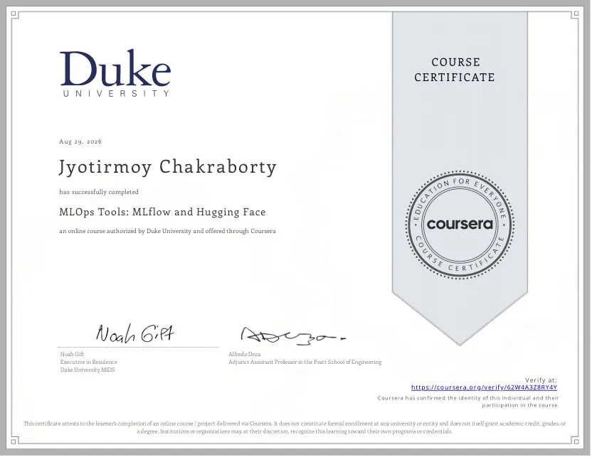
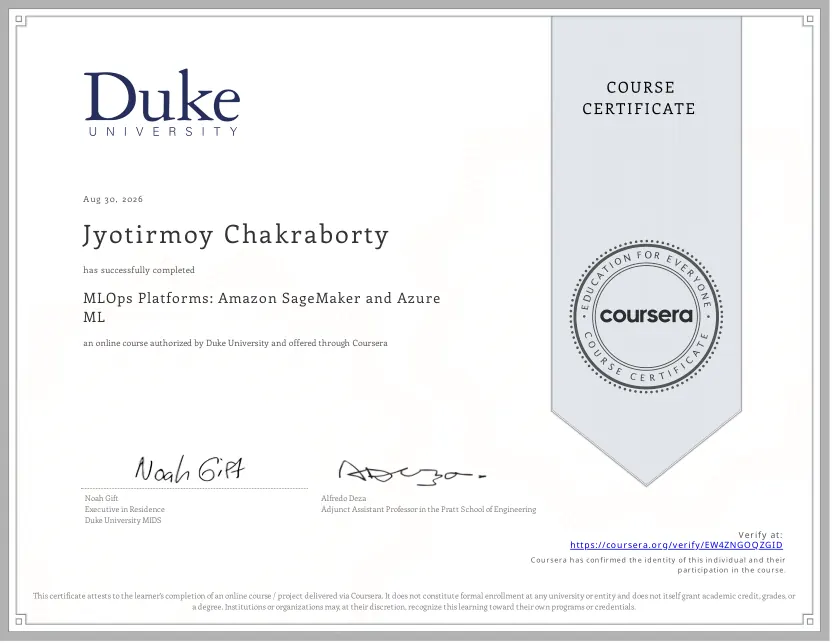
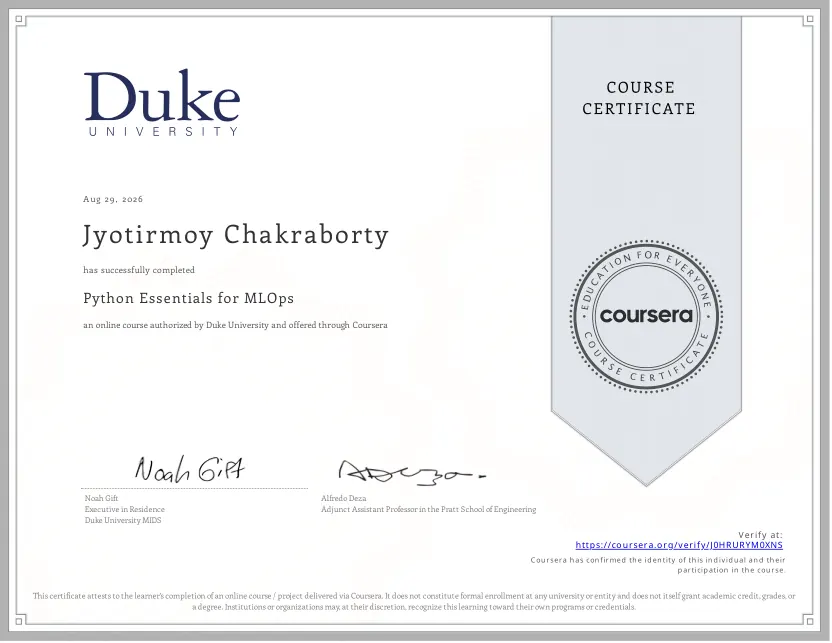
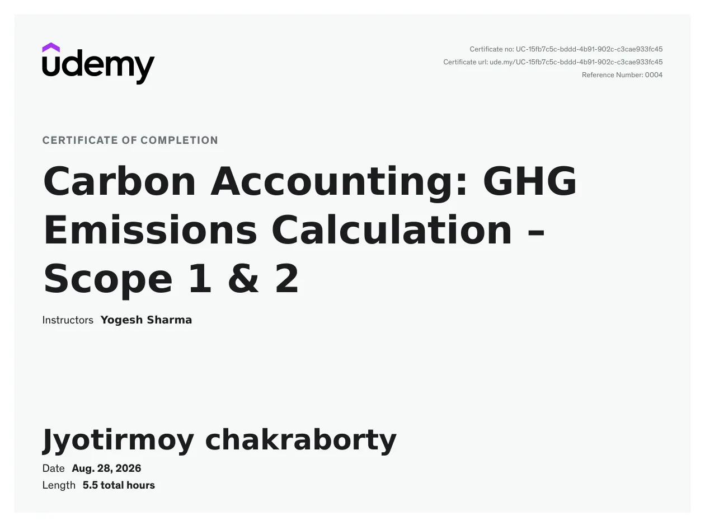
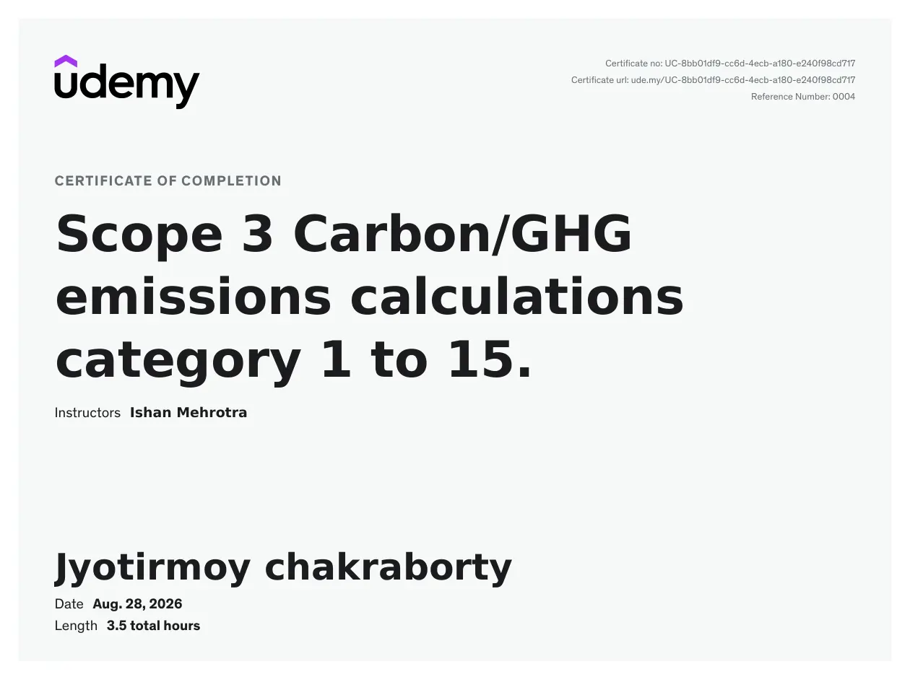

MS by Research · Energy Sciences and Engineering
Indian Institute of Technology GuwahatiCurrent CGPA 8.7/10. Research emphasis: battery management, digital twins, state estimation and embedded validation.
Education, responsibility, applied research, technical skills and independently verifiable course credentials.
Current CGPA 8.7/10. Research emphasis: battery management, digital twins, state estimation and embedded validation.
CGPA 7.33/10. Undergraduate capstone in real-time computer vision and edge computing.
Student coordinator supporting placement-related communication and coordination.
Used in: Safety-gated battery digital twin; BatteryWise
Used in: Edge–cloud research architecture
Used in: Battery SOC neural models; battery ML monitoring
Used in: Simulation and PIL-oriented battery validation; CV capstone
Used in: BatteryWise; NEXUS P2P; monitoring platform
A project-backed account rather than proficiency percentages.
| Technology | Experience stage | Example and source |
|---|---|---|
| MATLAB / Simulink | Research / simulation | Four-cell ECM, estimation and fault-oriented BMS simulation View project → |
| EKF and residual monitoring | Research implementation | Local SOC observer and residual / uncertainty signals View project → |
| OPAL-RT | Preparation / ongoing | Real-time plant setup for planned physical CHIL View project → |
| TI C2000 | Embedded-oriented development | Controller deployment preparation; physical CHIL is pending View project → |
| Python / PyTorch | Practical implementation | Battery SOC neural modelling; monitoring platform View project → |
| FastAPI / SQLite | Practical implementation | Local battery telemetry collection and analytics View project → |
| ML drift monitoring | Prototype implementation | Monitoring, alerting and model-lifecycle workflow View project → |
| YOLOv5 / OpenCV | Undergraduate project | Computer-vision person detection and perspective calibration View project → |
Six distinct documented course-completion records, each with its original PDF and issuer verification link.
Applied software, model development and machine-learning operations

Preview certificateDuke University-authorized course · Coursera

Preview certificateDuke University-authorized course · Coursera

Preview certificateGHG accounting coursework covering Scope 1, Scope 2 and the 15 Scope 3 categories

Preview certificateUdemy course · Instructor: Yogesh Sharma

Preview certificateUdemy course · Instructor: Ishan Mehrotra
Top 3% nationally, as stated in the uploaded résumé.
These are course-completion credentials, not degrees or professional licenses. Duke University authorized the Coursera courses; the Udemy certificates identify their individual instructors.
An automated guide using approved portfolio content — not Jyotirmoy.
Runs entirely in your browser. No messages are stored or sent to an AI provider.